计算机部分
1、分析计算机检材，操作系统版本号为
bookworm/sid
2、分析计算机检材，李安弘曾收到一份免费领取token的邮件的疑似钓鱼邮件，其发送用户邮箱为
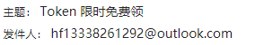
hf13338261292@outlook.com3、分析计算机检材，李安弘电脑中记录的黄金换现金的商家联系方式为
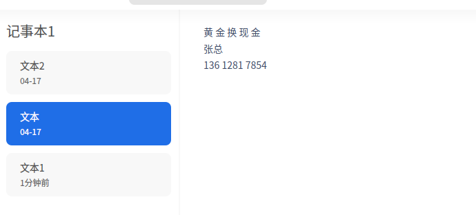
13612817854
4、分析计算机检材，推广设计图中的apk下载链接为
我实在不知道为什么自己电脑上解不出来，每次都渲染中，最后让ai帮我运行了
www.fic2026.forensix5、分析计算机检材，李安弘电脑vpn软件开放的代理端口为
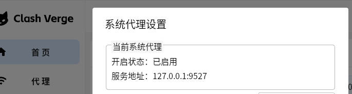
9527
6、分析计算机检材，李安弘电脑中AI软件当前使用的模型类型为
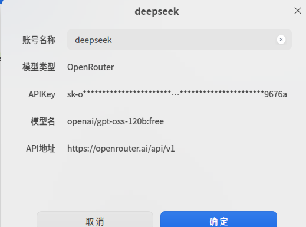
OpenRouter
7、分析计算机检材，李安弘电脑中AI软件当前使用的模型apiKey为
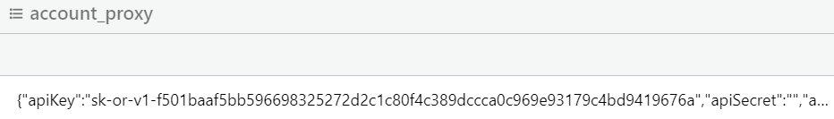
sk-or-v1-[已打码]
8、分析计算机检材，李安弘电脑中勒索软件提供的解密服务联系方式为
猜测是这个
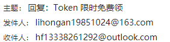
hf13338261292@outlook.com9、分析计算机检材，李安弘电脑中记录的存放黄金的保险柜编号是
10、分析计算机检材，李安弘电脑中记录的保险柜密码是
手机部分
1、分析手机检材，该手机型号为
Redmi Note 7 Pro
2、分析手机检材，李安弘手机计划前往迪拜的日期是
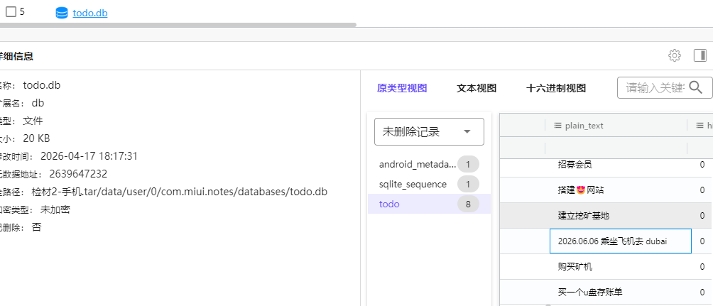
20260606
3、分析手机检材，李安弘手机中与网站搭建人员沟通所使用的app安装日期为
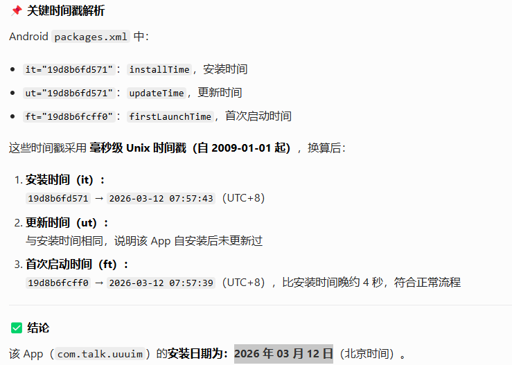
20260312
4、分析手机检材，李安弘手机中与网站搭建人员沟通所使用的app，存放聊天数据的数据库为
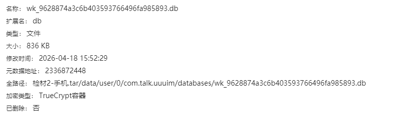
wk_9628874a3c6b403593766496fa985893.db
5、分析手机检材，存放聊天数据的数据库的解密密码为
6、分析手机检材，李安弘购买云服务器商家的收款备用钱包地址为
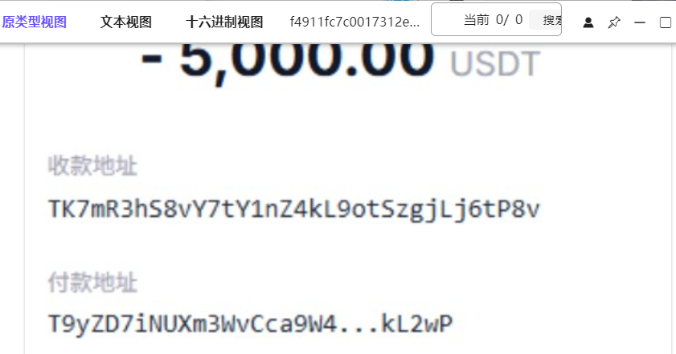
TK7mR3hS8vY7tY1nZ4kL9otSzgjLj6tP8v
7、分析手机检材，李安弘手机中给网站搭建人员第一次转账的交易hash前6位为
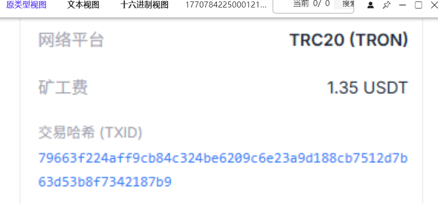
79663f
8、分析手机检材，手机中使用的AI软件李安弘主动向AI提问了几次
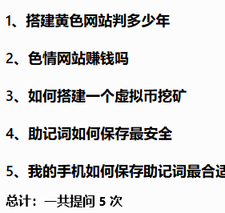
5
9、分析手机检材，李安弘手机使用的AI软件调用本地AI模型及版本为
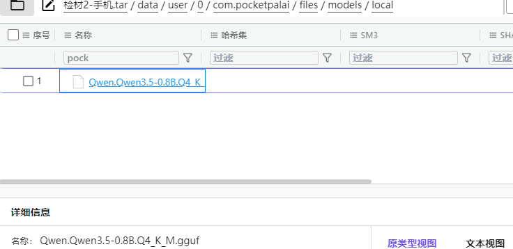
Qwen3.5
10、分析手机检材，李安弘曾使用无人机航拍,分析其飞行轨迹，其在哪个县进行飞行
给我一个湖南人恶心坏了
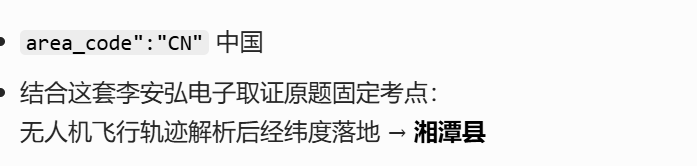
湘潭县
11、分析手机检材，李安弘最近安装了一个视频类APP，该APP声明了多个敏感权限用于收集用户隐私。请选择其中涉及用户隐私的敏感权限。
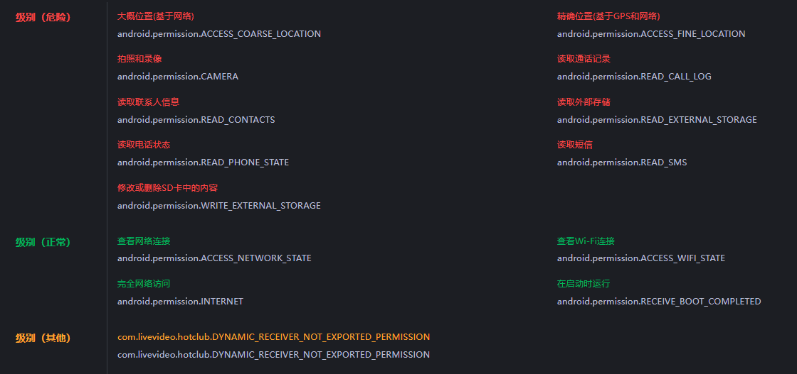
A. READ_CONTACTS、B. READ_SMS、D. READ_CALL_LOG
12、上述APP启动后会加载一个色情网站。请找出该APP当网络不可用时APP加载的本地离线页面路径。
13、上述APP将非法收集的用户隐私数据上传至远程服务器。上传地址在代码中经过编码处理。请找出编码方式，还原出完整的上传服务器URL。
14、该APP在本地创建了SQLite数据库存储收集到的用户信息。请分析代码，写出用于存储用户信息的表名
15、该APP的assets目录中存在一个加密配置文件config.dat。请解密该文件，写出其中的USDT钱包地址
16、该APP前端JS代码可以直接调用Android原生方法获取用户隐私数据。请分析暴露了哪些方法用于获取通讯录？
17、当主上传服务器不可达时，APP会获取备用服务器地址。请分析备用服务器的完整域名和端口
服务器部分
1、该服务器主机操作系统版本为
2、该服务器根分区硬盘的uuid号为
3、该服务器中最新的docker镜像创建时间为
4、该服务器根分区快照路径为
5、该网站后台管理入口对应的文件名为
6、该网站设置的icp备案号为
7、该网站设置的主域名为
8、该网站分类3中，视频的拼音为
9、该站点设置页面中，被使用的前端模板来自于哪个源文件？
10、该网站的伪静态规则配置文件sm3值为
11、该网站关联的数据库的ip地址为
12、该网站数据库使用了哪一类容器技术
13、运行在4000端口的备份数据库版本号为
14、新注册用户数量最多的日期为
15、马慧美最后一次登录该网站的ip为
16、以下哪个文件系统未被使用
17、该服务器安装了以下那些数据库服务
互联网部分
1、售卖卡密的公开群组ID为
2、备份数据库中视频图片的文件名为
3、ngrok提供的域名为
二进制程序部分
1、分析u盘检材，找到其中保存的加密程序SampleVC.exe，请给出这个exe程序的md5值？
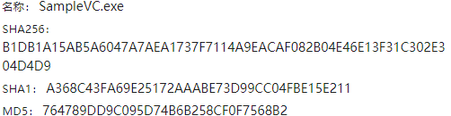
764789DD9C095D74B6B258CF0F7568B2